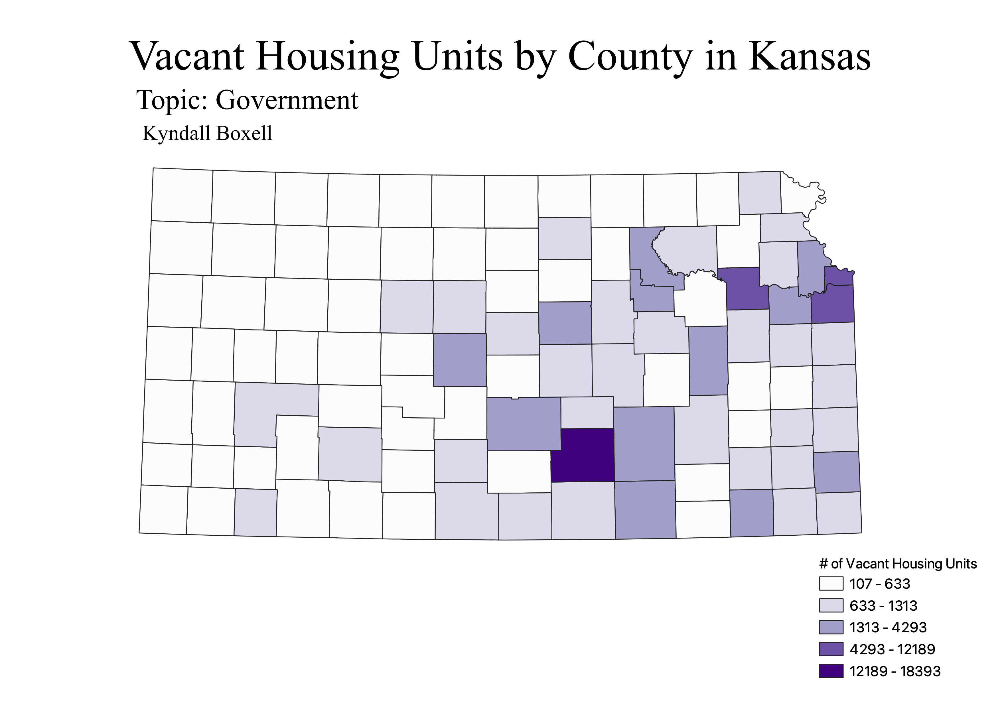

Homework 6: Census data choropleth
Kyndall Boxell
The dataset I used includes county-level data on occupied and vacant housing in Kansas. In this choropleth, I visualized the data for vacant housing units by county and organized it using a color gradient. As you can see, one county in particular has the most vacant housing units at between 12189 and 18393. It is the only one in the largest category (Dark purple). Most counties in Kansas are colored white, indicating that the number of vacant housing units falls between 107 and 633.
Note: I understand that this is data on housing, but I found this dataset under the Government category filter and it was the most interesting to me. I've linked its source under the filters I used on the census site if this is an issue.

Data used for this project
CSV dataset
Link to vector layer as geojson
Link to vector layer as shapefile
Link to filtered data on census site